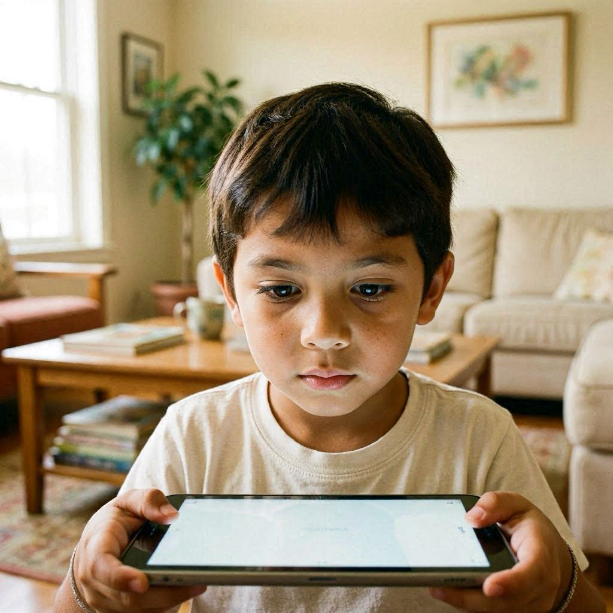
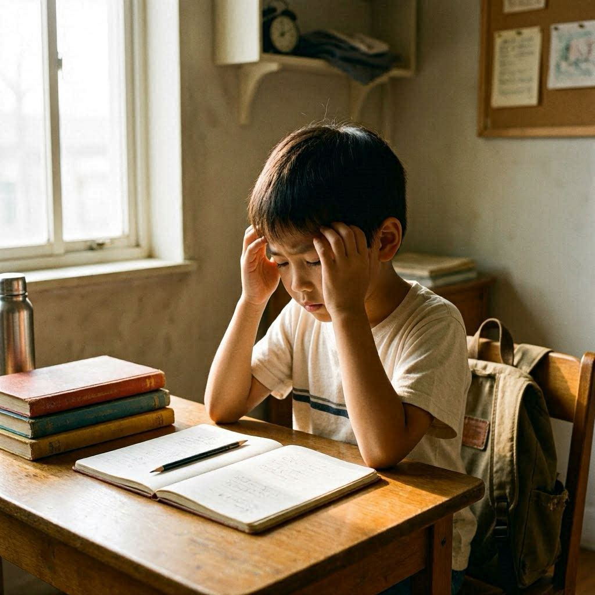
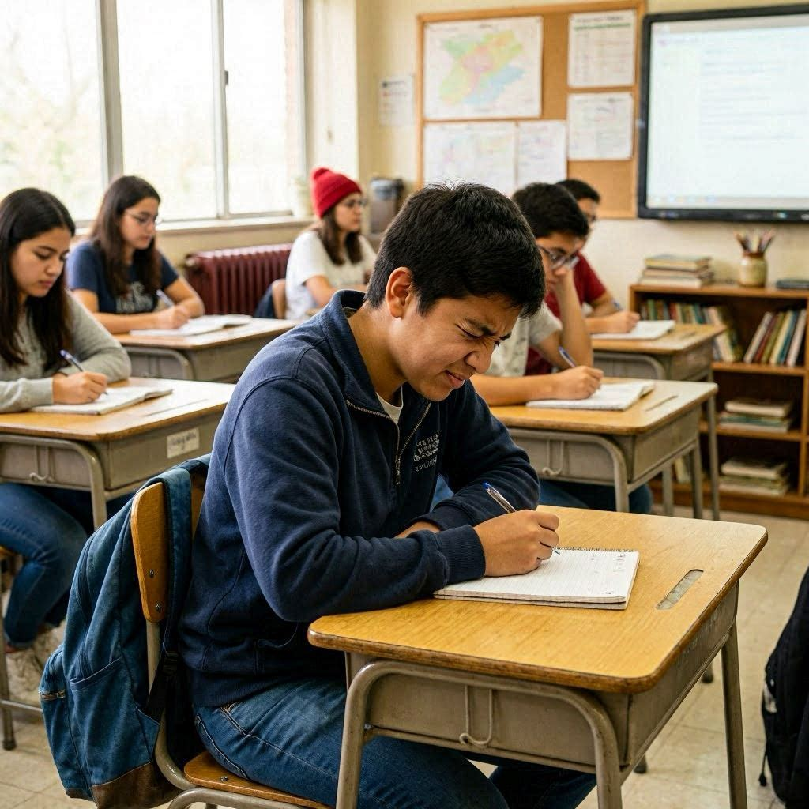
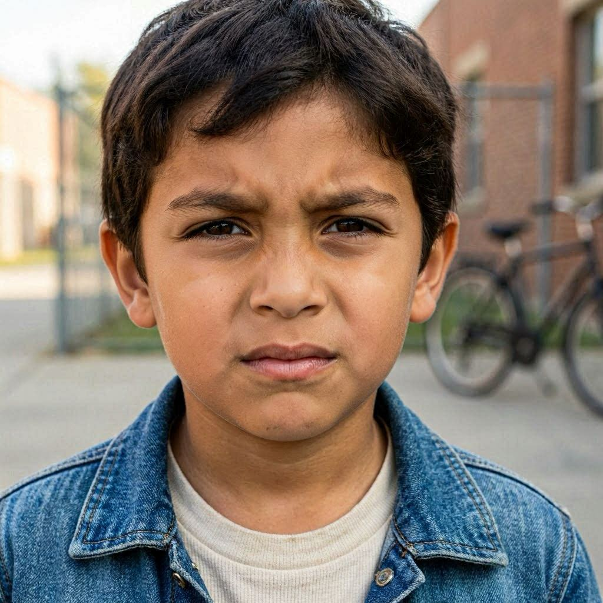
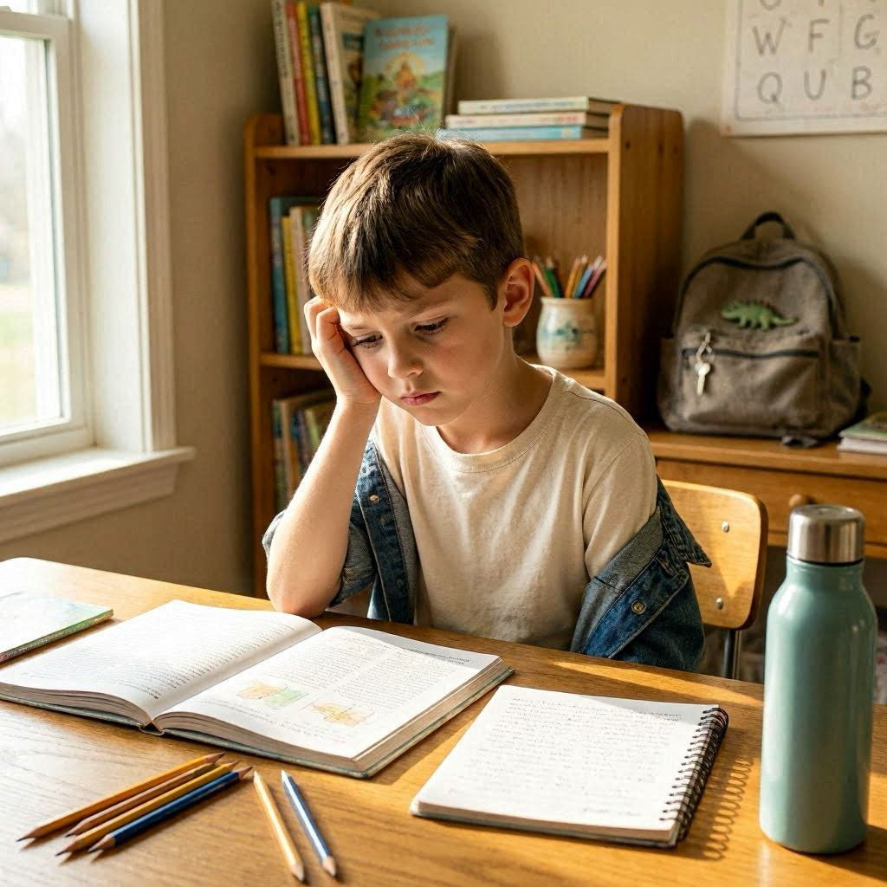
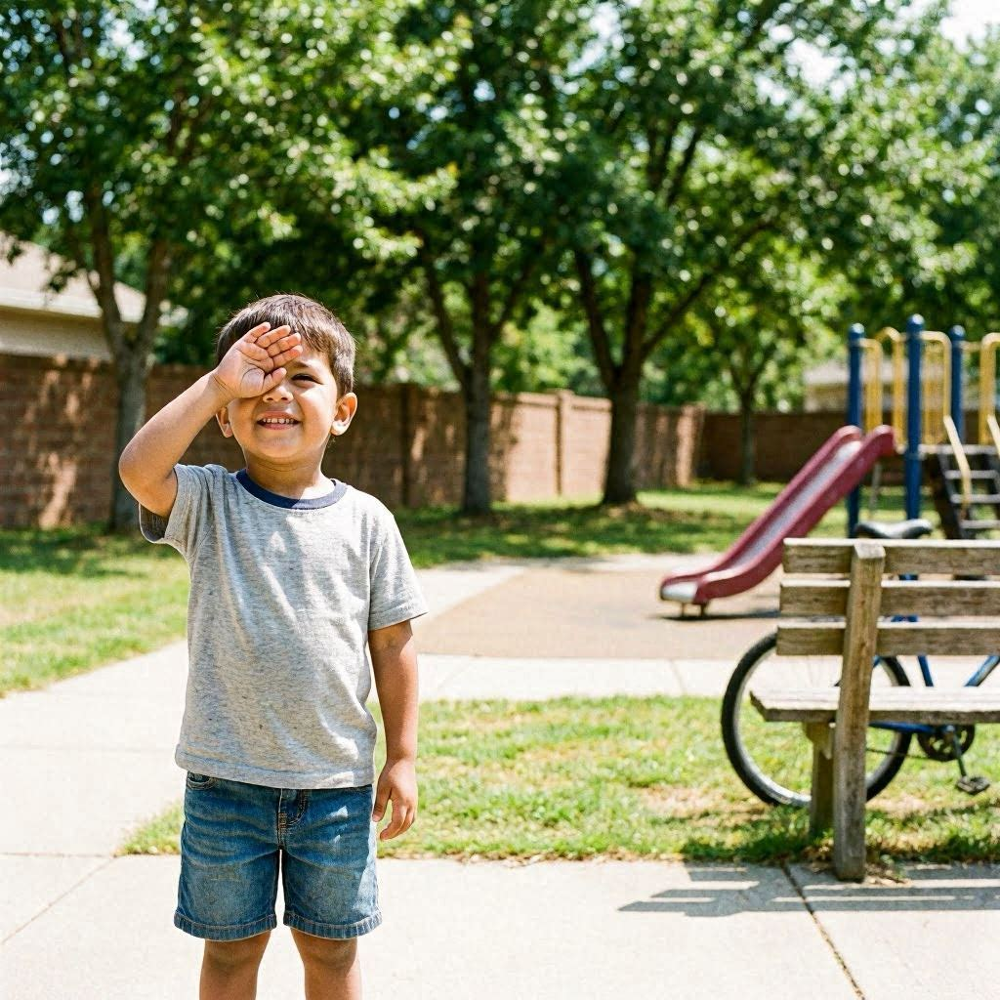

La miopia ocurre cuando el ojo crece en longitud mas de lo normal. Esto hace que la imagen se enfoque delante de la retina en lugar de sobre ella, produciendo vision borrosa de lejos.
En Latinoamerica, la prevalencia de miopia esta aumentando aceleradamente, impulsada por el mayor tiempo frente a pantallas, menos horas al aire libre y factores geneticos.
La buena noticia: hoy existen tratamientos efectivos que pueden frenar su progresion, especialmente si se inician a tiempo.
50%
de LATAM sera miope en 2050
10x
mayor riesgo de complicaciones
8-12
años, ventana critica
60%
reduccion con tratamiento
Reconocelas a tiempo
Señales de alerta en tu hijo
Si observas alguna de estas señales, consulta con un profesional de la salud visual en salud visual lo antes posible.
1

Se acerca mucho a las cosas
Tu hijo acerca objetos o pantallas mas de lo normal para verlos claramente.
2

Dolores de cabeza frecuentes
Cefaleas frecuentes al final del dia escolar o tras usar pantallas.
3

Dificultad para ver el tablero
No puede leer lo que esta escrito en el pizarron desde su puesto en clase.
4

Entrecierra los ojos
Hace un gesto de entrecerrar los ojos para enfocar mejor objetos lejanos.
5

Bajo rendimiento escolar
Dificultades de aprendizaje relacionadas con no ver bien en clase.
6

Molestia con la luz
Sensibilidad a la luz o dificultad para ver bien en ambientes poco iluminados.
Opciones disponibles
Tratamientos para el control de miopia
Hoy existen multiples opciones para frenar la progresion. El profesional de la salud visual indicara cual es la mas adecuada segun la edad, grado y estilo de vida de tu hijo.
Alta evidencia
Orto-K
Lentes nocturnos que remodelan la cornea. El niño duerme con ellos y ve bien durante el dia sin gafas. Alta eficacia comprobada en reduccion de progresion miopica.
Alta evidencia
Atropina
Gotas oculares en concentracion muy baja. Se aplican una vez al dia. Frenan el crecimiento del ojo con minimos efectos secundarios en concentraciones bajas.
Evidencia moderada
Lentes de contacto especiales
Lentes blandas de uso diurno con diseño especial para reducir el estimulo de crecimiento axial. Ideales para niños activos desde los 8 años.
Evidencia moderada
Lentes oftalmicas de control
Gafas con tecnologia de desenfoque periferico. Opcion no invasiva, ideal para niños que no toleran lentes de contacto. Disponibles desde los 4 años.
Importante: ningun tratamiento debe iniciarse sin evaluacion de un profesional de la salud visual. El tipo de miopia, la edad y otros factores determinan cual es la mejor opcion para tu hijo.
Resolvemos tus dudas
Preguntas frecuentes
Que es la miopia?
La miopia es una condicion en la que el ojo crece mas de lo normal, haciendo que los objetos lejanos se vean borrosos mientras que los cercanos se ven con claridad. Es la alteracion visual mas frecuente en niños en edad escolar.
A que edad puede aparecer?
Puede aparecer desde los 6 años, aunque es mas frecuente entre los 8 y 12 años. El periodo de crecimiento escolar es el de mayor riesgo. Por eso es tan importante el control visual anual desde los primeros años.
Tiene cura la miopia?
La miopia no tiene cura definitiva en la infancia, pero si puede controlarse. Los tratamientos actuales como Orto-K, atropina y lentes especiales han demostrado reducir su progresion hasta en un 60%, protegiendo la vision a largo plazo.
Por que es importante controlarla?
Una miopia alta (mas de -6.00 D) aumenta significativamente el riesgo de complicaciones graves en la edad adulta como desprendimiento de retina, glaucoma y cataratas. Controlarla desde niño reduce ese riesgo.
Cuanto tiempo exterior es recomendable?
Los estudios recomiendan al menos 90 minutos diarios de actividad al aire libre con luz natural. Esto no detiene la miopia ya iniciada, pero puede retrasar su aparicion en niños que aun no la tienen.
Cada cuanto debo llevar a mi hijo al profesional de la salud visual?
Si tu hijo ya es miope, la revision debe ser cada 6 meses para evaluar la progresion. Si aun no tiene miopia pero hay antecedentes familiares, una revision anual es fundamental desde los 5-6 años.
Encuentra un profesional de la salud visual cerca de ti
La red MML cuenta con optometras especializados en control de miopia en 6 paises. Encuentra el mas cercano a tu familia.